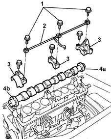
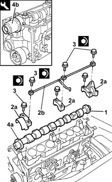

1036B10 overhead camshaft - r r on vehicle
- Path
- Procedures > 10 ENGINE > 1036 TIMING SYSTEM > 1036B overhead camshaft > 1036B10 overhead camshaft - r r on vehicle
- Kind
- repair procedure (removal / refitting; the operation number is the code)
- Applies to
- engines: 1.2 8v; all production periods
- Interactive page
- https://sloeber94.github.io/elrnDB-lYpsln/en/#/2428896
Applies to: engines: 1.2 8v; all production periods
 Removing
Removing
 Refitting
RefittingPosition the vehicle on the ramp.
Proceed with removal 1048A10 air cleaner filtering element - replace .
Proceed with removal 1008B10 power unit front mount (timing side) flexible block - replace .
Proceed with removal 1008A46 cam shaft left rigid mount - r r .
Proceed with removal 1032D12 timing system protective cover(s) - r + r .
Proceed with removal 4450B04 right front wheel r r .
Proceed with removal 7055B66 Engine compartment DUST SHIELD protection in right front wheel arch - R.R. .
Proceed with removal 7055B91 Right front WHEEL ARCH LINER - R.R. .
Proceed with removal 1092B40 air conditioner compressor/alternator drive belt - r + r .
Proceed with removal 1092A10 Crankshaft services PULLEY - R.R. .
Proceed with removal 1032B10 toothed timing belt - r + r for timing adjustment or replacement .
Proceed with removal 1032B40 toothed-driven pulley (one) - r + r with timing belt removed .
Proceed with removal 5530B10 battery - r+r .
Proceed with removal 5530B52 Battery DRIP TRAY/SUPPORT - R.R. .
Proceed with removal 1036B32 camshaft seal support with ignition coil r + r including seal replacement .
Proceed with removal 1016A20 single cam cover - r + r and replace gasket .
1. Undo the camshaft cap bolts.
2. Fit the camshaft journal lubrication pipe.
3. Remove the camshaft caps.
4. Remove the camshafts (4a) and the oil seals (4b).

Applies to: engines: 1.2 8v; all production periods
Refitting
Removing1. Place the crankshaft back in its housing.
2. Refit the camshaft caps (2a) and camshaft journal lubrication pipe (2b).
3. Tighten the camshaft cap bolts to the specified torque.
 | Fastening | Component | Ø | Value (daNm) |
|---|---|---|---|---|
3 | Bolt | CAMSHAFT CAPS | M6 | 1 |
| Fastening | Component | Ø | Value (daNm) |
|---|---|---|---|---|
3 | Bolt | CAMSHAFT CAPS | M8 | 2.0 |
4. Fit camshaft front oil seal (4a) using tool (4b).
 | Name | Country |
|---|---|---|
4b | Fitting tool | 1.860.882.000 |

Applies to: engines: 1.2 8v; all production periods
Proceed with refitting 1016A20 single cam cover - r + r and replace gasket .
Proceed with refitting 1036B32 camshaft seal support with ignition coil r + r including seal replacement .
Proceed with refitting 5530B52 Battery DRIP TRAY/SUPPORT - R.R. .
Proceed with refitting 5530B10 battery - r+r .
Proceed with refitting 1032B40 toothed-driven pulley (one) - r + r with timing belt removed .
Proceed with refitting 1032B10 toothed timing belt - r + r for timing adjustment or replacement .
Proceed with refitting 1092A10 Crankshaft services PULLEY - R.R. .
Proceed with refitting 1092B40 air conditioner compressor/alternator drive belt - r + r .
Proceed with refitting 7055B91 Right front WHEEL ARCH LINER - R.R. .
Proceed with refitting 7055B66 Engine compartment DUST SHIELD protection in right front wheel arch - R.R. .
Proceed with refitting 4450B04 right front wheel r r .
Proceed with refitting 1032D12 timing system protective cover(s) - r + r .
Proceed with refitting 1008A46 cam shaft left rigid mount - r r .
Proceed with refitting 1008B10 power unit front mount (timing side) flexible block - replace .
Proceed with refitting 1048A10 air cleaner filtering element - replace .
Remove the car from the ramps.
Topics linked from this page (15)
- 1008A46 cam shaft left rigid mount - r r
- 1008B10 power unit front mount (timing side) flexible block - replace
- 1016A20 single cam cover - r + r and replace gasket
- 1032B10 toothed timing belt - r + r for timing adjustment or replacement
- 1032B40 toothed-driven pulley (one) - r + r with timing belt removed
- 1032D12 timing system protective cover(s) - r + r
- 1036B32 camshaft seal support with ignition coil r + r including seal replacement
- 1048A10 air cleaner filtering element - replace
- 1092A10 Crankshaft services PULLEY - R.R.
- 1092B40 air conditioner compressor/alternator drive belt - r + r
- 4450B04 right front wheel r r
- 5530B10 battery - r+r
- 5530B52 Battery DRIP TRAY/SUPPORT - R.R.
- 7055B66 Engine compartment DUST SHIELD protection in right front wheel arch - R.R.
- 7055B91 Right front WHEEL ARCH LINER - R.R.